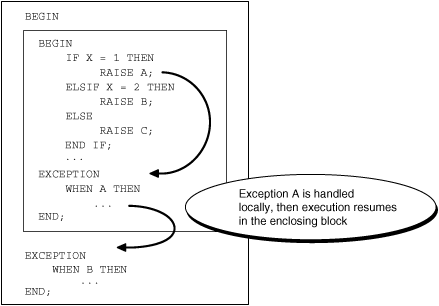
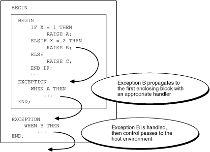
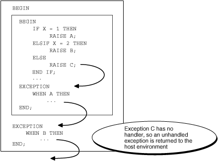

11.8 Exception Propagation
If an exception is raised in a block that has no exception handler for it, then the exception propagates. That is, the exception reproduces itself in successive enclosing blocks until either a block has a handler for it or there is no enclosing block. If there is no handler for the exception, then PL/SQL returns an unhandled exception error to the invoker or host environment, which determines the outcome (for more information, see "Unhandled Exceptions").
In Figure 11-1, one block is nested inside another. The inner block raises exception A. The inner block has an exception handler for A, so A does not propagate. After the exception handler runs, control transfers to the next statement of the outer block.
Figure 11-1 Exception Does Not Propagate

Description of "Figure 11-1 Exception Does Not Propagate"
In Figure 11-2, the inner block raises exception B. The inner block does not have an exception handler for exception B, so B propagates to the outer block, which does have an exception handler for it. After the exception handler runs, control transfers to the host environment.
Figure 11-2 Exception Propagates from Inner Block to Outer Block

Description of "Figure 11-2 Exception Propagates from Inner Block to Outer Block"
In Figure 11-3, the inner block raises exception C. The inner block does not have an exception handler for C, so exception C propagates to the outer block. The outer block does not have an exception handler for C, so PL/SQL returns an unhandled exception error to the host environment.
Figure 11-3 PL/SQL Returns Unhandled Exception Error to Host Environment

Description of "Figure 11-3 PL/SQL Returns Unhandled Exception Error to Host Environment"
A user-defined exception can propagate beyond its scope (that is, beyond the block that declares it), but its name does not exist beyond its scope. Therefore, beyond its scope, a user-defined exception can be handled only with an OTHERS exception handler.
In Example 11-14, the inner block declares an exception named past_due, for which it has no exception handler. When the inner block raises past_due, the exception propagates to the outer block, where the name past_due does not exist. The outer block handles the exception with an OTHERS exception handler.
If the outer block does not handle the user-defined exception, then an error occurs, as in Example 11-15.
Note:
Exceptions cannot propagate across remote subprogram invocations. Therefore, a PL/SQL block cannot handle an exception raised by a remote subprogram.
Topics
Example 11-14 Exception that Propagates Beyond Scope is Handled
CREATE OR REPLACE PROCEDURE p AUTHID DEFINER AS
BEGIN
DECLARE
past_due EXCEPTION;
PRAGMA EXCEPTION_INIT (past_due, -4910);
due_date DATE := trunc(SYSDATE) - 1;
todays_date DATE := trunc(SYSDATE);
BEGIN
IF due_date < todays_date THEN
RAISE past_due;
END IF;
END;
EXCEPTION
WHEN OTHERS THEN
ROLLBACK;
RAISE;
END;
/
Example 11-15 Exception that Propagates Beyond Scope is Not Handled
BEGIN
DECLARE
past_due EXCEPTION;
due_date DATE := trunc(SYSDATE) - 1;
todays_date DATE := trunc(SYSDATE);
BEGIN
IF due_date < todays_date THEN
RAISE past_due;
END IF;
END;
END;
/
Result:
BEGIN
*
ERROR at line 1:
ORA-06510: PL/SQL: unhandled user-defined exception
ORA-06512: at line 911.8.1 Propagation of Exceptions Raised in Declarations
An exception raised in a declaration propagates immediately to the enclosing block (or to the invoker or host environment if there is no enclosing block). Therefore, the exception handler must be in an enclosing or invoking block, not in the same block as the declaration.
In Example 11-16, the VALUE_ERROR exception handler is in the same block as the declaration that raises VALUE_ERROR. Because the exception propagates immediately to the host environment, the exception handler does not handle it.
Example 11-17 is like Example 11-16 except that an enclosing block handles the VALUE_ERROR exception that the declaration in the inner block raises.
Example 11-16 Exception Raised in Declaration is Not Handled
DECLARE credit_limit CONSTANT NUMBER(3) := 5000; -- Maximum value is 999 BEGIN NULL; EXCEPTION WHEN VALUE_ERROR THEN DBMS_OUTPUT.PUT_LINE('Exception raised in declaration.'); END; /
Result:
DECLARE * ERROR at line 1: ORA-06502: PL/SQL: numeric or value error: number precision too large ORA-06512: at line 2
Example 11-17 Exception Raised in Declaration is Handled by Enclosing Block
BEGIN DECLARE credit_limit CONSTANT NUMBER(3) := 5000; BEGIN NULL; END; EXCEPTION WHEN VALUE_ERROR THEN DBMS_OUTPUT.PUT_LINE('Exception raised in declaration.'); END; /
Result:
Exception raised in declaration.
11.8.2 Propagation of Exceptions Raised in Exception Handlers
An exception raised in an exception handler propagates immediately to the enclosing block (or to the invoker or host environment if there is no enclosing block). Therefore, the exception handler must be in an enclosing or invoking block.
In Example 11-18, when n is zero, the calculation 1/n raises the predefined exception ZERO_DIVIDE, and control transfers to the ZERO_DIVIDE exception handler in the same block. When the exception handler raises ZERO_DIVIDE, the exception propagates immediately to the invoker. The invoker does not handle the exception, so PL/SQL returns an unhandled exception error to the host environment.
Example 11-19 is like Example 11-18 except that when the procedure returns an unhandled exception error to the invoker, the invoker handles it.
Example 11-20 is like Example 11-18 except that an enclosing block handles the exception that the exception handler in the inner block raises.
In Example 11-21, the exception-handling part of the procedure has exception handlers for user-defined exception i_is_one and predefined exception ZERO_DIVIDE. When the i_is_one exception handler raises ZERO_DIVIDE, the exception propagates immediately to the invoker (therefore, the ZERO_DIVIDE exception handler does not handle it). The invoker does not handle the exception, so PL/SQL returns an unhandled exception error to the host environment.
Example 11-22 is like Example 11-21 except that an enclosing block handles the ZERO_DIVIDE exception that the i_is_one exception handler raises.
Example 11-18 Exception Raised in Exception Handler is Not Handled
CREATE PROCEDURE print_reciprocal (n NUMBER) AUTHID DEFINER IS BEGIN DBMS_OUTPUT.PUT_LINE(1/n); -- handled EXCEPTION WHEN ZERO_DIVIDE THEN DBMS_OUTPUT.PUT_LINE('Error:'); DBMS_OUTPUT.PUT_LINE(1/n || ' is undefined'); -- not handled END; / BEGIN -- invoking block print_reciprocal(0); END;
Result:
Error: BEGIN * ERROR at line 1: ORA-01476: divisor is equal to zero ORA-06512: at "HR.PRINT_RECIPROCAL", line 7 ORA-01476: divisor is equal to zero ORA-06512: at line 2
Example 11-19 Exception Raised in Exception Handler is Handled by Invoker
CREATE PROCEDURE print_reciprocal (n NUMBER) AUTHID DEFINER IS
BEGIN
DBMS_OUTPUT.PUT_LINE(1/n);
EXCEPTION
WHEN ZERO_DIVIDE THEN
DBMS_OUTPUT.PUT_LINE('Error:');
DBMS_OUTPUT.PUT_LINE(1/n || ' is undefined');
END;
/
BEGIN -- invoking block
print_reciprocal(0);
EXCEPTION
WHEN ZERO_DIVIDE THEN -- handles exception raised in exception handler
DBMS_OUTPUT.PUT_LINE('1/0 is undefined.');
END;
/
Result:
Error: 1/0 is undefined.
Example 11-20 Exception Raised in Exception Handler is Handled by Enclosing Block
CREATE PROCEDURE print_reciprocal (n NUMBER) AUTHID DEFINER IS BEGIN BEGIN DBMS_OUTPUT.PUT_LINE(1/n); EXCEPTION WHEN ZERO_DIVIDE THEN DBMS_OUTPUT.PUT_LINE('Error in inner block:'); DBMS_OUTPUT.PUT_LINE(1/n || ' is undefined.'); END; EXCEPTION WHEN ZERO_DIVIDE THEN -- handles exception raised in exception handler DBMS_OUTPUT.PUT('Error in outer block: '); DBMS_OUTPUT.PUT_LINE('1/0 is undefined.'); END; / BEGIN print_reciprocal(0); END; /
Result:
Error in inner block: Error in outer block: 1/0 is undefined.
Example 11-21 Exception Raised in Exception Handler is Not Handled
CREATE PROCEDURE descending_reciprocals (n INTEGER) AUTHID DEFINER IS i INTEGER; i_is_one EXCEPTION; BEGIN i := n; LOOP IF i = 1 THEN RAISE i_is_one; ELSE DBMS_OUTPUT.PUT_LINE('Reciprocal of ' || i || ' is ' || 1/i); END IF; i := i - 1; END LOOP; EXCEPTION WHEN i_is_one THEN DBMS_OUTPUT.PUT_LINE('1 is its own reciprocal.'); DBMS_OUTPUT.PUT_LINE('Reciprocal of ' || TO_CHAR(i-1) || ' is ' || TO_CHAR(1/(i-1))); WHEN ZERO_DIVIDE THEN DBMS_OUTPUT.PUT_LINE('Error:'); DBMS_OUTPUT.PUT_LINE(1/n || ' is undefined'); END; / BEGIN descending_reciprocals(3); END; /
Result:
Reciprocal of 3 is .3333333333333333333333333333333333333333 Reciprocal of 2 is .5 1 is its own reciprocal. BEGIN * ERROR at line 1: ORA-01476: divisor is equal to zero ORA-06512: at "HR.DESCENDING_RECIPROCALS", line 19 ORA-06510: PL/SQL: unhandled user-defined exception ORA-06512: at line 2
Example 11-22 Exception Raised in Exception Handler is Handled by Enclosing Block
CREATE PROCEDURE descending_reciprocals (n INTEGER) AUTHID DEFINER IS i INTEGER; i_is_one EXCEPTION; BEGIN BEGIN i := n; LOOP IF i = 1 THEN RAISE i_is_one; ELSE DBMS_OUTPUT.PUT_LINE('Reciprocal of ' || i || ' is ' || 1/i); END IF; i := i - 1; END LOOP; EXCEPTION WHEN i_is_one THEN DBMS_OUTPUT.PUT_LINE('1 is its own reciprocal.'); DBMS_OUTPUT.PUT_LINE('Reciprocal of ' || TO_CHAR(i-1) || ' is ' || TO_CHAR(1/(i-1))); WHEN ZERO_DIVIDE THEN DBMS_OUTPUT.PUT_LINE('Error:'); DBMS_OUTPUT.PUT_LINE(1/n || ' is undefined'); END; EXCEPTION WHEN ZERO_DIVIDE THEN -- handles exception raised in exception handler DBMS_OUTPUT.PUT_LINE('Error:'); DBMS_OUTPUT.PUT_LINE('1/0 is undefined'); END; / BEGIN descending_reciprocals(3); END; /
Result:
Reciprocal of 3 is .3333333333333333333333333333333333333333 Reciprocal of 2 is .5 1 is its own reciprocal. Error: 1/0 is undefined